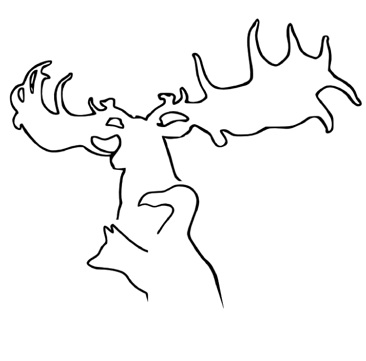

Outreach
Threesis video
Three minutes to explain my thesis!
TEDxUCD Talk
Listening to evolutionary oddities


 A tail of two extremes" GRS Talk 2014
A tail of two extremes" GRS Talk 2014
 "Dying without Wings" BES steudent Keynote 2014
"Dying without Wings" BES steudent Keynote 2014
 Time is in the Eye of the Beholder ESEB 2014
Time is in the Eye of the Beholder ESEB 2014
 Gordon Reserch Conference Poster 2014
Gordon Reserch Conference Poster 2014
 UCD Earth and Natural Sciences Conference 2013
UCD Earth and Natural Sciences Conference 2013
 And to the victor the spoiled
And to the victor the spoiled
 Radio GaGa
Radio GaGa
 Biodiversity face off
Biodiversity face off
 What big eyes you have
What big eyes you have
Photos of random beasties
Flickr account of minature beasts iv managed to capture so far.